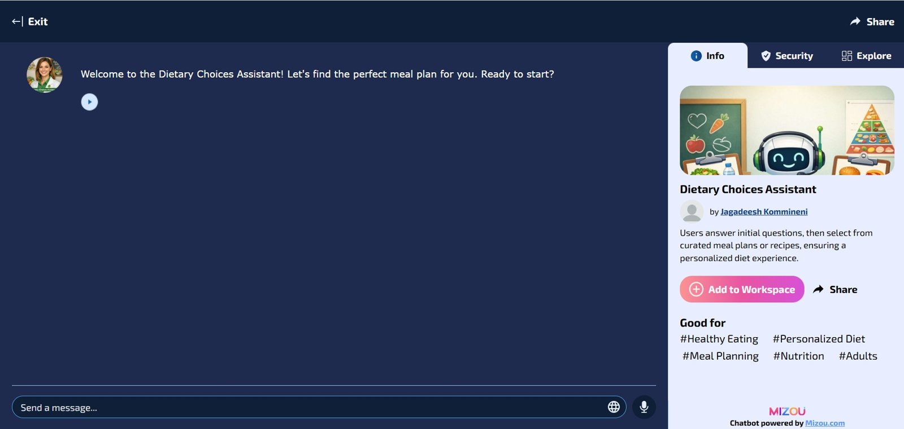

Artifacts / Artifact 2
Dietary Choices Assistant: A Personalized AI Meal-Planning Chatbot
A conversational AI assistant that asks users about their goals, preferences, and restrictions, then suggests meal plans and recipes that fit them.
Group project, built on the Mizou chatbot platform and published from teammate Jagadeesh Kommineni's account. My part: design discussions, including defining the bot's purpose and what it should and should not do.

Visitors can ask three questions without signing in. A free Mizou sign-in allows a longer conversation.
Description
The Dietary Choices Assistant greets the user, asks a few questions about their goals and needs, and then offers meal plans or recipes that match. It can help with:
- Personalized meal plans based on dietary goals
- Guidance on maintaining a balanced diet
- Tips for healthy snacks and substitutions
- Ideas for exploring creative meal options
- Adjustments for preferences, restrictions, and health conditions
In the example shown above, a user asks for high-protein Indian lunch ideas, both vegetarian and non-vegetarian. The assistant suggests Paneer Tikka Masala and Chicken Tandoori, offers a detailed recipe, and then provides the ingredients and step-by-step instructions.
Objective
We built this chatbot to learn how to design and deploy a practical AI assistant for a specific audience. Our goal was to turn a general-purpose language model into a focused tool that gives safe, personalized, and useful dietary suggestions.
Process
Our group started by agreeing on the problem: people want healthier meals, but general advice does not fit their goals, cuisines, or health needs. I took part in the design discussions where we decided the bot's purpose and scope. We chose to focus on adults who want help planning meals, and we decided the bot should first ask questions to understand the user before making suggestions.
We then made several design decisions:
- Personalization first: the bot gathers the user's goals, preferences, and restrictions before recommending anything.
- Health-aware suggestions: users can share health information, and the bot considers their conditions and dietary restrictions when giving suggestions.
- Formal, clear tone: we set the responses to stay formal and easy to follow, with recipes broken into ingredients and steps.
- Privacy: conversations are not saved or shared.
- User control: an Exit button at the top left lets the user end the conversation at any time.
We configured these decisions in Mizou, tested the bot with sample requests like the one shown above, and published it with a shareable preview link.
Tools & Technologies
- Mizou (AI chatbot builder and hosting)
Value Proposition
This chatbot shows how a general AI model can be shaped into a focused assistant that gives people personalized, practical guidance while respecting their privacy.
Unique Value
Instead of giving the same advice to everyone, the assistant adapts to each user's cuisine, diet type, goals, and health needs. It also gives complete, usable answers, such as full recipes with ingredients and steps, rather than general tips.
Relevance
The same design steps apply to AI assistants in IT operations: define a clear purpose, decide what information the assistant needs, set guardrails and tone, protect user data, and test with real requests. Teams building internal help-desk or troubleshooting assistants can follow this approach to create tools people trust and actually use.